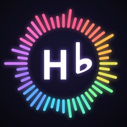

01In development · running on iPhone
Hello World
An app created for casual play and serious musicians.
HTML · JavaScript · Web Audio · Capacitor · Swift · CoreMIDI
Type a word and hear its song. Hello World lines the alphabet up with the piano, starting at the lowest key, so every letter becomes a chord and every word becomes a chord progression. It started as a childhood idea and is now a native iPhone app.
Features
- Each letter is a chord; repeated notes move through major, minor and seventh variants, with rules you can change
- Stay in key, block chords, arpeggios or rhythmic pulses, and per-chord lengths that fit the loop to even bars
- Eight synthesized instruments, from piano to an 80s polysynth and a palm-muted metal guitar, plus drums and tempo control
- Mixer with reverb, tempo-synced delay and a gated snare reverb
- Song mode: chain words into a timeline and drag to reorder
- MIDI export, Bluetooth MIDI and DAW clock sync
- Video export for social media, with a visualizer that lights each letter's chord as it plays
- Eleven app languages and nine alphabets, including right-to-left Arabic
Every sound is synthesized live on the phone. There are no audio samples in the app.